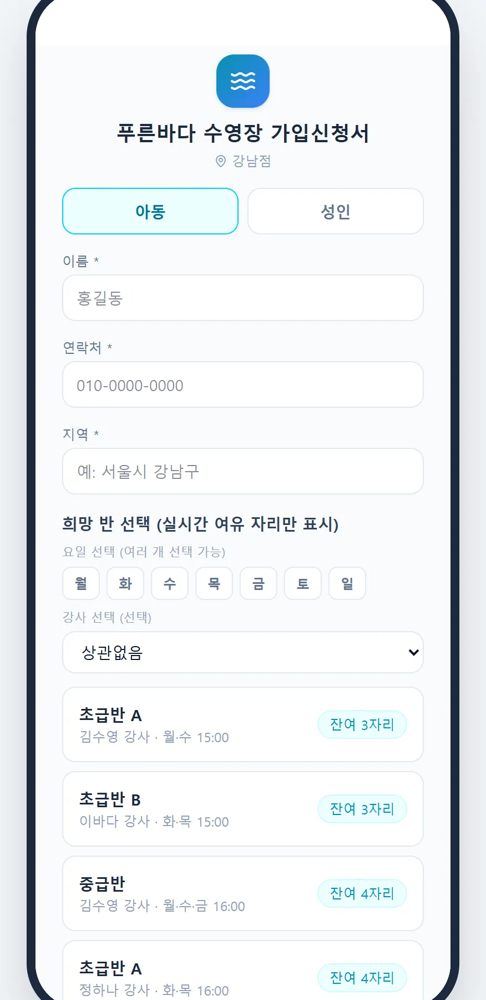

현장에서 들은 이야기
이런 불편, 겪고 계시죠
매번 반복적인 연락이 힘들다.
수영 강사 · 청주 · 설문 응답보강과 출결의 전화 상담이 힘들어요.
수영 강사 · 경기도 시흥 · 설문 응답이렇게 사용해요
네 단계면 끝나요
- 신청서 링크 보내기
데스크가 신규 문의자에게 가입신청서 링크를 보내요.
- 반 고르기
아동·성인을 고르면 지금 여유 자리가 있는 반·강사·요일·시간만 보여요.
- 제출 즉시 등록
자리가 있으면 바로 학생으로 등록되고 반에 배정돼요.
- 이력 확인
가입신청 이력에서 등록 완료와 대기 신청을 구분해 확인해요.
정원이 차면 대기 신청으로
선택한 반이 그 사이 다 찼다면 등록 대신 대기 신청으로 받아, 자리가 나면 순서대로 안내해요.
- 실시간 여유 자리
- 대기 신청 자동 전환
- 같은 강사 다른 요일 제안
입회 신청서까지 디지털로
건강 상태, 알레르기, 물 공포심, 방문경로를 학생 상세의 입회 신청서에 기록해 강사와 공유해요.
- 건강·알레르기 기록
- 방문경로 통계
- 종이 서류 없이
#01신규 문의 전화 줄이기
#02정원 초과 등록 방지
#0324시간 접수
자주 묻는 질문
궁금한 점
신청 내역은 어디서 보나요?
강습생 관리 → 가입신청 이력에서 모든 신청과 결과를 확인해요.
정원이 찬 반은 어떻게 보이나요?
목록에 나타나지 않아요. 원하면 대기 신청을 받을 수 있어요.
기존 회원은 어떻게 옮기나요?
회원명부 엑셀을 올리면 한 번에 등록돼요.
온라인 가입신청, 30일 동안 무료로 써 보세요
강습생 수 제한 없이 모든 기능 · 초기 세팅 무료
화면은 SwimSync 체험용 예시 데이터로 찍었어요. 실제 이름·금액이 아니에요.